从 2019 到 2020，Apache Dubbo 年度回顾与总结¶
非常感谢大家对 Dubbo 社区的关注，通过这篇文章我们将：总结过去一年 Dubbo 社区取得的成绩，包括社区和框架演进两个方面；展望未来 Dubbo 社区和框架的新的规划（roadmap）。社区建设是推动 Dubbo 健康持续发展的一个非常重要的环节，我们需要与社区保持良性的互动、有活跃的贡献者、有积极的富有建设性的讨论，而整个 Dubbo 社区过去一年在这方面都做的不错；在框架演进上，我们主要发布了 2.7.0 - 2.7.5 共 6 个特性版本，功能层面涵盖编程模型、协议、服务治理、性能优化等多个方面；除了已经发布的功能外，我们在 Dubbo 3.0 协议、服务自省和云原生等方向上也做了深入的探索，对这些方向的支持将是 Dubbo 接下来的重要工作方向，希望能通过这篇文章将其中更详细的思考和计划同步给大家。
社区回顾¶
回顾 Dubbo 社区过去一年的发展，其中一个重要的节点就是 2019 年 5 月从 Apache 孵化毕业。成为第二个由 Alibaba 捐献后从 Apache 毕业的项目，我有幸参与到了从重启开源、进入 Apache 孵化到毕业的整个过程，社区在此过程中做了大量的工作，包括邮件列表建设、代码规范检查、文档和代码国际化、issue/pr 处理等，这些一方面是 Apache 社区要求的工作，同时也为推动 Dubbo 的发展起到了正面的作用。
在从 Apache 毕业之后，Dubbo 相关的项目也进行了迁移，都迁移到了 Apache 组织之下：
Dubbo 社区的项目总共有 24 个之多，维护如此多的项目，并不是单纯靠几个活跃的开发者就能做到的，而是靠整个社区努力的结果。我总结了过去一年提名的所有 Committer/PMC，总过有 27 人获得提名（23 名 committer、4 名 PMC），通过下方的饼状图可以看出，只有不到 20% 的贡献者是来自于 Alibaba，而 80% 以上是来自各个不同组织的开发者或爱好者。这样的 Committer 分布，是加入 Apache 带给 Dubbo 社区的一个最重要的变化之一：Dubbo 项目是属于整个社区的，反映的是不同组织不同开发者的共同诉求，它的发展不是由一个公司控制或决定的，而是由社区共同讨论后决定的。如果你对参与到 Dubbo 社区感兴趣，都可以参与到 Dubbo 发展的讨论、决策和 coding 中来，也非常期待各位能成为下一个 Committer。
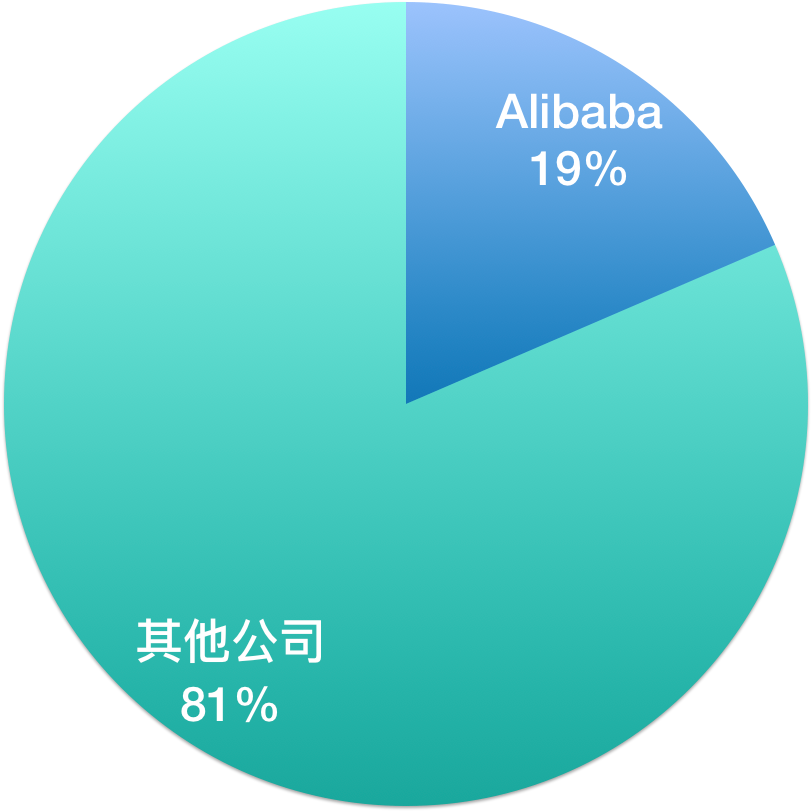
过去一年 Dubbo 社区组织了超过 10 场的线下 meetup 活动，覆盖了国内基本所有的开发者聚集的城市，与广大 Dubbo 开发者和使用者保持了密切交流。通过这些线下或线上的直播活动，分享了超过 100 个 topic 的演讲，深度讲解了 Dubbo 社区最新动态、功能模块开发和近期规划等。并且在所有的这些主题演讲中，绝大多数都是通过社区采集的方式，最终由 Dubbo 的深度企业分享的实践主题，其中典型的代表包括携程、工商银行、考拉、信用算力等。
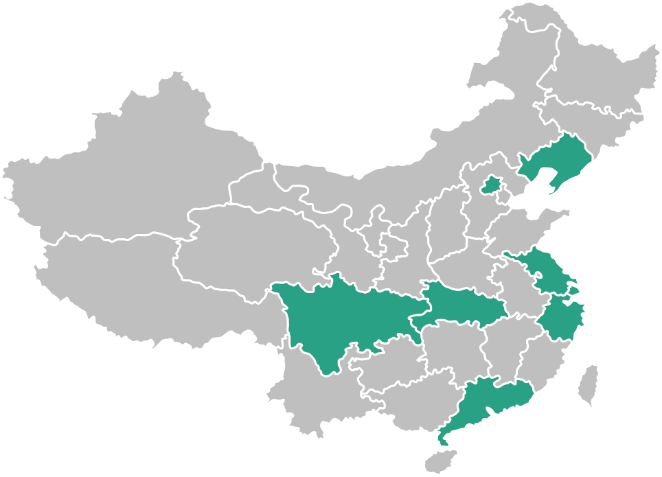
从 Github 上来看，Dubbo 在过去一年也受到了非常高的关注度，一个重要的里程碑是 Star 数突破 3w，相比重启开源时增长了近 5 倍；贡献者由最初的几十个增长到现在的 282 个，而这其中有六七十个已经被提名为 committer，不论是贡献者数量还是 committer 比例都得到很大的提升；另一个数据是发布的版本，总共发布了 64 个版本，大家如果要了解每个版本的具体信息，也可以从这里点进去查看。
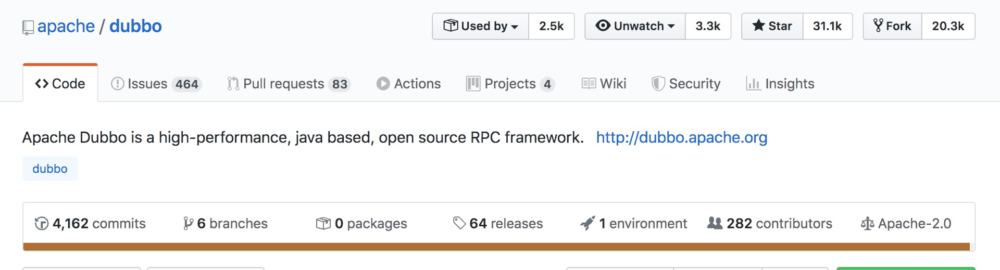
当前社区维护的大版本主要有 3 个，分别是 2.5.x 2.6.x 和 2.7.x。
其中，2.7.x 是我们的主要开发版本，在过去的一年共发布了 6 个版本（2.7.0 - 2.7.5），每个版本都带来了一些值得关注的特性或功能升级，涵盖从编程模型、服务治理、性能到协议的多个方面的增强。
2.6.x 版本则定位为 bugfix 版本，过去一年共发布了 3 个版本，主要以修复问题和安全漏洞为主，并没有增加什么新 feature，因此这一系列的版本在稳定性上是得到保证的。
2.5.x 版本当前从去年初开始已宣布 EOF，只做安全修复；而到了下半年已经完全停止了维护。还在使用这个版本的用户建议尽快升级到 2.6 或 2.7 版本。
关于 2.6 和 2.7 版本的用户分布情况，目前并没有官方的统计数据，但是根据我们从 issue 分布及一些深度用户的跟踪情况来看，这两个版本的使用分布大概是 40% - 60% 的状态。同时我们还观察到一个趋势，即很大一部分 2.6 的用户都已经开始调研升级到 2.7 版本或在升级的过程中，毕竟一个框架是否能很好的满足业务开发诉求，一个重要的因素是其是否不断的有功能的加入，是否能跟进新的技术趋势，2.6 版本已很难满足这些诉求。
对于很多开发者来说，要升级到 2.7 版本，当前最大的顾虑即是其稳定性。因为 2.7 每个版本都会增加很多新内容且迭代速度较快，要保证每个发布版本的稳定性对社区来说也是一个充满挑战的事情。为了方便用户更好的完成升级评估，我们近期在 github 上列出了单独列了一个 issue 来统计现在包括未来版本的稳定性：Dubbo 各版本总结与升级建议 #5669
| 版本 | 重要功能 | 升级建议 | |
|---|---|---|---|
| 1 | 2.7.5 | 服务自省 HTTP/2（gRPC） Protobuf TLS 性能优化 https://github.com/apache/dubbo/releases/tag/dubbo-2.7.5 | 不建议大规模生产使用 |
| 2 | 2.7.4.1 | bugfixes and enhancements of 2.7.3 | 推荐生产使用 |
| 3 | 2.7.3 | bigfixes of and enhancements of 2.7.2 | 推荐生产使用 |
| 4 | 2.7.2 | bigfixes of and enhancements of 2.7.1 | 不建议大规模生产使用 |
| 5 | 2.7.1 | bigfixes of and enhancements of 2.7.0 | 不建议大规模生产使用 |
| 6 | 2.7.0 | 异步编程模型 - 消费端/提供端异步 服务治理规则增强 简化的注册模型 配置中心、元数据中心 package 重构 https://github.com/apache/dubbo/releases/tag/dubbo-2.7.0 | beta 版本，2.6.x 重构后首个版本 |
其中 2.7.5 版本预计将在接下来的 1-2 个版本之后逐步达到稳定状态。
对于后续的版本是否通过标识性的后缀如 -beta、RC 等来区分不同阶段的发布版本，社区也有过类似的讨论，后续我们将视未来发展情况而定。
重点功能回顾¶
接下来针对 2.7 版本中发布的新功能，从编程模型、性能优化、服务治理、传输协议、生态发展等几个角度来做具体的讲解。
编程模型¶
Dubbo 中涉及编程模型相关的改动主要是以下几点：
- CompletableFuture 异步方法签名的服务
- 服务端异步支持 API
- IDL 跨语言服务定义
- Reactive-style 方法签名的服务
首先，我们先来看一下异步化相关的增强。 Dubbo Java 版本的典型服务定义如下：
public interface HelloService {
// Synchronous style
String sayHello(String name);
}
如果要实现消费端的异步服务调用，则需要单独配置异步标识，并通过 RpcContext API 配合使用
String result = helloService.sayHello("world"); // result is always null
Future future = RpcContext.getContext().getFuture();
在 2.7 版本之后，我们可以直接定义如下方法接口，以更直观的实现消费端/提供端异步：
public interface HelloService {
// Asynchronous style
CompletableFuture<String> sayHello(String name);
}
CompletableFuture<String> future = helloService.sayHello("world");
以上示例都是基于 Java Interface 来描述 Dubbo 服务的，如果要和多语言异构的微服务实现互调，则服务又需要用相应语言的方式重新定义一遍，无法实现跨语言的服务复用；另外跨语言的序列化也是需要注意的一个问题。
为此 2.7.5 版本引入了对 IDL + Protobuf 的支持，以解决跨语言的服务定义问题，具体可参见示例：
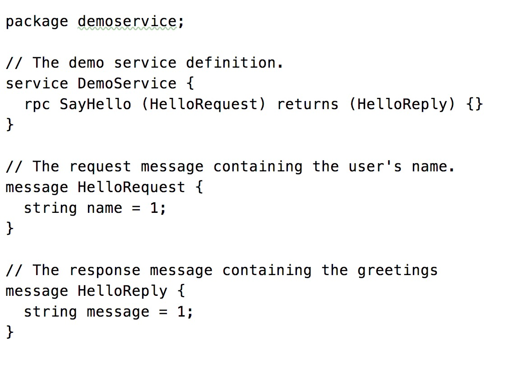
对 Reactive-style API 的支持则和上面 CompletableFuture 有些类似，允许用户定义 RxJava、Reactor API 的服务接口
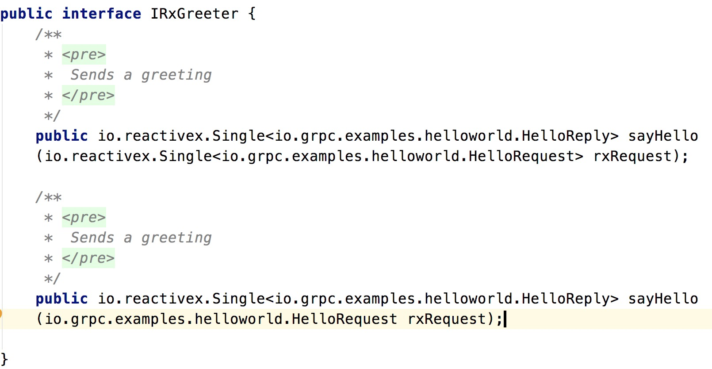
但是需要注意的一定是，由于外围的 Reactive API 需要有底层传输协议的支持才有意义，因此，目前 Reactive API 只能在使用 gRPC 协议时才有意义，具体请参见示例以及下面关于 ”Dubbo 对 gRPC 的支持” 一节的讲解。
性能优化¶
2.7 版本在性能优化方面也做了很多的工作，对 Dubbo 业务系统的吞吐量、调用链路响应速度、服务治理链路性能等都有明显提升。
- 系统吞吐量
和提升系统吞吐量相关的增强主要有框架的全异步化改造、消费端线程模型优化、引入 Stream 语义协议等。
全异步化改造，很关键的一点是 Filter 链路的异步化，之前的 Filter 只有一个同步的 invoke 方法，现在为了支持异步回调，增加了 Listener 回调监听器，从而可以实现对异步调用结果的监听与拦截。
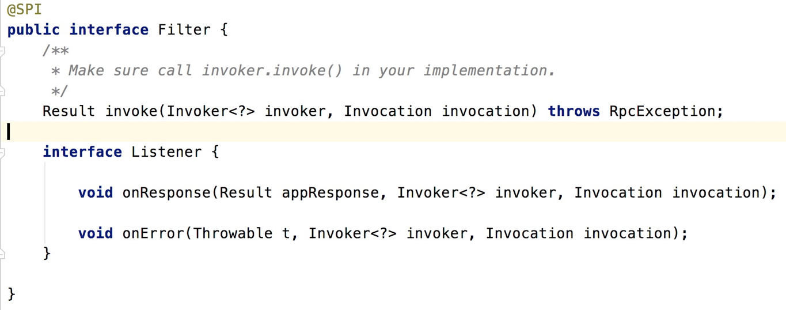
关于消费端线程模型的优化，对于网关类应用，需要消费大量服务的应用，都会在系统稳定性和性能表现上有很大提升，其优化后的总体工作原理图所下所示，具体解析可以参见之前发布的文章：《消费端线程池模型》
老线程模型工作原理：
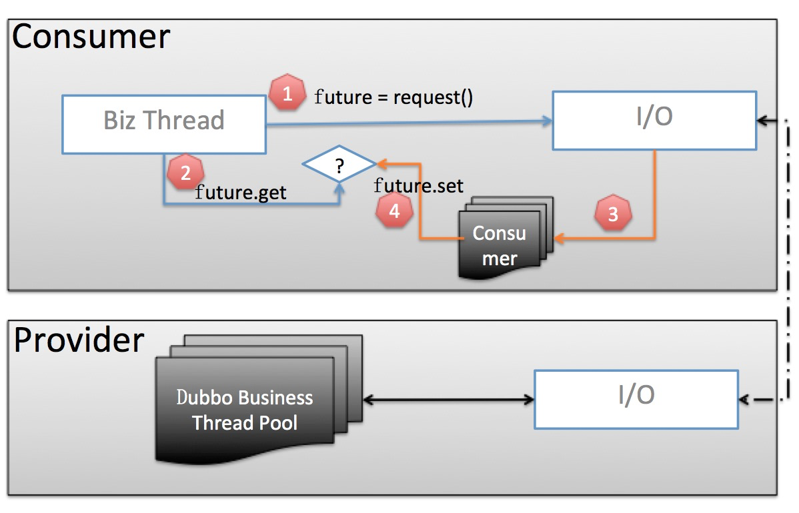
新线程模型工作原理：
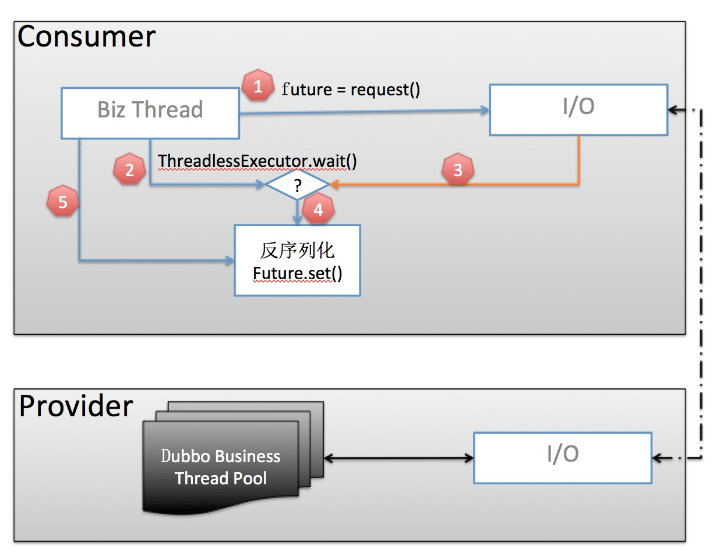
- RPC 调用链路
从 2.7.0 到 2.7.5，从我们的测试数据来看，通过一系列的优化调用链路性能提升在 30% 以上。总体来说，优化的目标是减少调用过程中的内存分配和 cpu 计算，主要有两个方面的改造：
- 服务元数据静态化，在启动阶段尽可能多的计算并缓存，以减少调用过程中的计算成本，加快响应速度
-
减少调用过程中的 URL 操作产生的内存分配
-
服务治理链路
服务治理链路上主要有以下几点值得关注：地址推送、服务治理规则推送、服务治理规则计算、路由选址等，尤其是在大规模服务集群的场景下，以上每个点都可能成为性能或稳定性瓶颈。在 2.7 版本中，目前着重对 “地址推送” 相关计算路径做了优化，简单概括起来主要是以下几点：
- 地址推送事件合并，避免短时间重复计算
- 全量地址推送时，避免 URL 重新分配
- 在 URL 合并链路上，引入 URL 可变状态，避免 URL 拷贝造成的开销
服务治理¶
服务治理也是 2.7 版本中着重增强的一个模块。总体上可以分为三部分
- 普通路由规则相关的优化和增强
- 增强对跨区域、跨机房部署的路由支持
- 元数据中心、配置中心
我们针对这三部分逐步展开讲解。以下是 2.7 版本路由规则的几个例子。
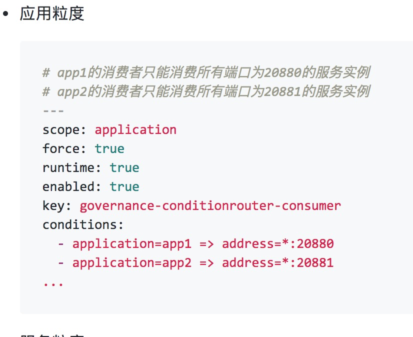
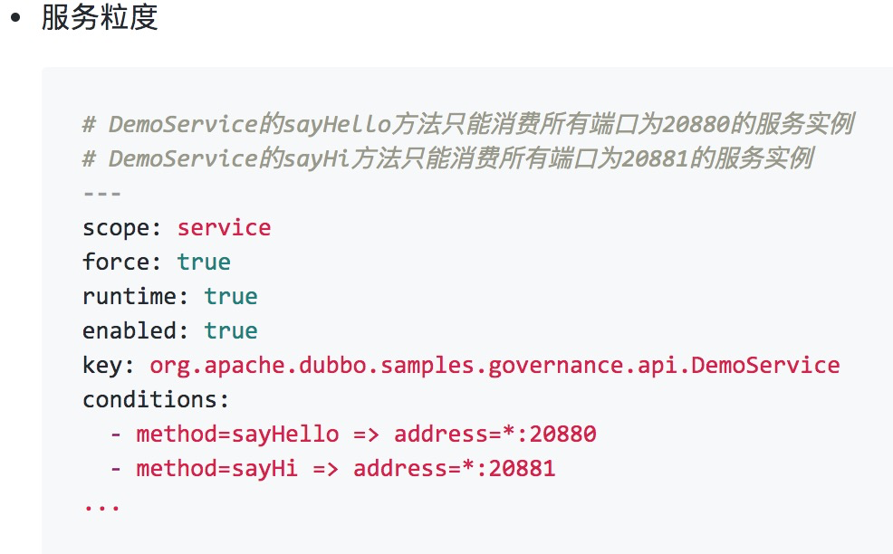
其中，最明显的一个变化是路由规则都以 YAML 进行了重写，并且后续所有的路由规则都计划以 YAML 为基本描述语言；相比于之前路由规则直接存储于注册中心，在 2.7 版本中增加了配置中心后，新版本的路由规则默认将存储在于独立的配置中心，配置格式推送机制都得到了优化；另外，2.7 版本中还增加了应用粒度的路由规则，方便从整个应用的角度去设置流量规则。
新增加的跨注册中心的路由机制，可以实现调用流量在多个注册中心间的负载均衡，对于需要做异地容灾、同机房优先或者注册中心迁移的场景比较有用处。
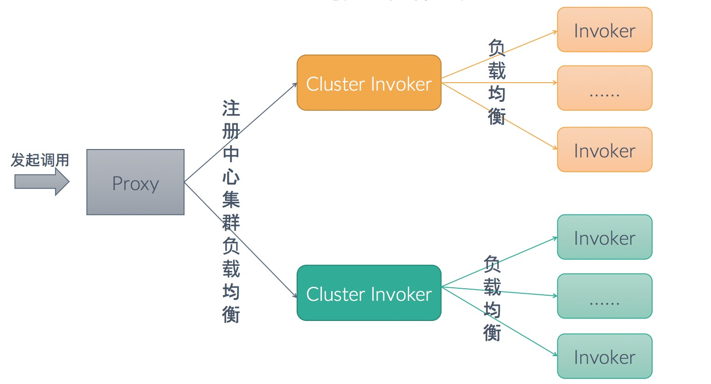
当前支持的注册中心集群负载均衡策略有：
- 同区域优先
- 权重轮询
- 指定优先级
- 任意可用
元数据中心存储了 Dubbo 服务方法定义的描述，目前主要的用途是服务测试，将来也可用作服务 API 管理、网关参数映射等。
新增的配置中心主要有两个用途：存储/推送配置规则、应用配置托管，接下来着重讲解应用配置托管相关功能，看其对 Dubbo 的开发与运维配置的影响。Dubbo 当前支持 JVM 动态参数、配置中心、API、本地配置文件等几种配置源，他们之间按照优先级从高到低的顺序实现配置覆盖，如下图所示：
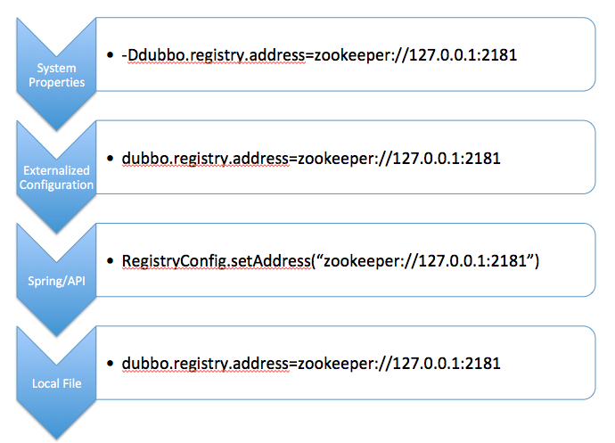
配置中心相当于是共享版本的 dubbo.properties 的远程托管，其中，key 值有特定的命名规范：
# 应⽤用级别
dubbo.{config-type}[.{config-id}].{config-item} {config-item-value}
# 服务级别
dubbo.service.{interface-name}[.{method-name}].{config-item} {config-item-value}
dubbo.reference.{interface-name}[.{method-name}].{config-item} {config-item-value}
# 多配置项
dubbo.{config-type}s.{config-id}.{config-item} {config-item-value}
传输协议¶
2.7 版本在 RPC 协议层和序列化层进行了扩展，RPC 协议层增加了对 gRPC 协议的支持，序列化层增加了对 Protobuf 协议的支持。
支持 gRPC 其中一个重要原因是其基于 HTTP/2 协议构建，HTTP/2 协议作为 HTTP 标准协议，在各个层次的网络设备及网关代理上都得到了很好的支持，因此具有更好的穿透性和通用性。通过支持 gRPC 协议，对于期望使用 HTTP/2 的 Dubbo 用户提供了一种传输协议选择。
gRPC 在 HTTP/2 上构建了 Stream 的 RPC 语义，支持 Request - Response、Stream - Response、Request - Stream、Bi-Stream 等多种语义，能满足不同的业务调用场景。
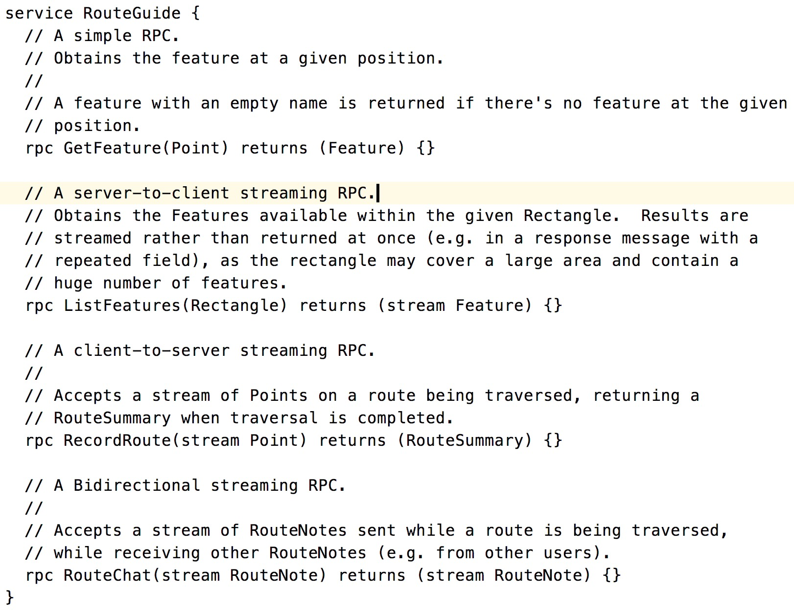
在 Dubbo 的设计中，所有的 RPC 协议都处于一个平等的地位，无论是自有的 Dubbo 协议，还是扩展的其他三方协议如 Thrift、Hessian、gRPC 等，得益于这样的设计，我们可以扩展任何新协议支持。关于如何扩展 RPC 协议及其应用场景，请参见之前发布的《使用 Dubbo 连接异构微服务体系》文章。
Protobuf 序列化协议支持更多的是考虑其在跨语言、安全性和性能方面。
Roadmap¶
未来社区将会持续推动 Dubbo 的发展，重点来说有以下几个方向：
- 继续增强服务治理相关能力，以更好的满足微服务开发和运维的需求；
- 协议层面，着手研发下一代的 RPC 协议，新协议将提供更丰富的如 Stream、Flow Control 等内置语义，同时将具有更好的扩展性、网关的友好性等；
- 基于应用粒度的服务发现机制，
- 云原生带来了底层基础设施的变化，同时在此基础上衍生出了如 ServiceMesh 的微服务解决方案，我们需要继续探索 Dubbo ；
微服务功能¶
目前正在开发或规划中的微服务功能有服务鉴权、熔断、路由规则增强等，预计将在接下来的 2.7.6 等版本中陆续发布。后续也将会根据社区中的诉求，陆续增加其他的微服务功能支持。
以当前正在开发的服务鉴权功能为例，这是社区中很多 Dubbo 使用者在实际使用中遇到的需求：虽然 Dubbo 服务主要是在内部运转，但有些服务仍期望只对部分场景或用户开放，比如某些涉及到敏感数据操作的服务，这就需要有鉴权能力的支持。
Dubbo调用鉴权认证方案 #5461 中有关于 Dubbo 当前正在开发中的鉴权功能的详细讨论，总体来说 Dubbo 提供的鉴权功能约束了 Dubbo 侧鉴权的基本流程，这是一套通用鉴权的方案，在 token 计算、校验等环节都被设计为可扩展的，因此可以方便的对接到各种认证及权限管理系统。
非常感谢社区的活跃开发者，现就职于爱奇艺的 CodingSinger，其是鉴权模块的发起者和主要开发贡献者。
协议 - 3.0¶
以下是 Dubbo 2.0 协议，我们之前已经在多个场合做过详细的讲解
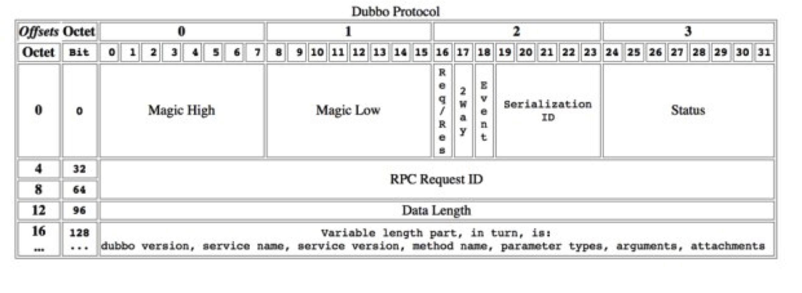
Dubbo 2.0 协议在云原生、mesh 等场景下暴露出一些问题，如：
- 协议缺少扩展性
- RPC 协议层和 payload 耦合在一起
- 基于 TCP 构建的二进制私有协议
- 缺少 Stream 语义的支持
所以，针对以上问题，新一代的 Dubbo 协议将突出以下特点：
Reactive Stream Reactive Stream 引入 RPC，带来更丰富的通信语义和 API 编程模型支持，如 Request-Stream、Bi-Stream 等
协议升级 协议内置应⽤层协议协商机制，包括自建协议升级机制、ALPN 等，以方面将来协议升级或兼容老版本协议的迁移
HTTP/2 微服务云原⽣生场景下，基于 HTTP/2 构建的通信协议具有更更好的通⽤用性和穿透性
可扩展 协议可扩展，区分协议头 Metadata 与 RPC 方法的参数
多语⾔支持 如通过支持 Protobuf 提供了更完善的 跨语言服务定义 与 序列化传输 的支持
Mesh 协议对 Mesh 更友好，方便完成与 Mesh 的协作，包括流量控制机制、应用层配置协商等
流量控制 协议内置流控机制，支持类似 Reqctive Stream 的 Request (n) 流控机制
协议通用性 兼顾通用性与性能，支持协议能在各种设备上运行
服务自省 - 应用粒度的服务注册¶
Dubbo 最大的优势之一在于其易用性，其面向接口（RPC 方法）的编程模型。同时，面向接口的治理也带来了一些问题：
- 地址数量成倍增长，给地址推送带来很大压力
- 和主流微服务体系模型不匹配，如 SpringCloud、Kubernetes 等
为此，我们计划引入应用粒度的服务注册机制，主要有以下几个重点：
- 注册中心按 “应用 - 实例IP” 组织，不再关心 RPC 接口同步
- 引入独立的元数据服务完成 RPC 接口同步工作
以下是应用粒度服务注册（服务自省）的基本工作原理，请持续关注后续对这部分的具体解析和开发进展。
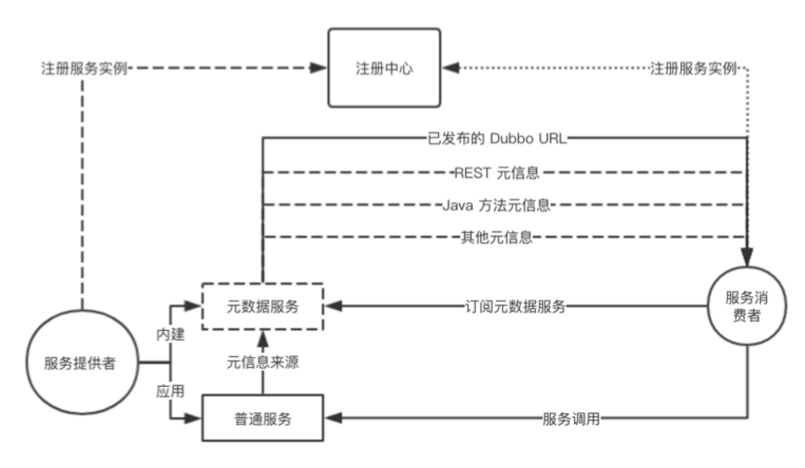
云原生¶
云原生带来了底层基础设施，应用开发、部署和运维等全方位的变化：
基础设施
- 基础设施调度机制变化，带来运维（生命周期）、服务治理等方面的变化。
- 服务发现能力下沉， Kubernetes 抽象了 Native Service Discovery。
Service Mesh - 云原生微服务解决方案
- Mesh 为跨语言、sdk 升级等提供了解决方案，Dubbo sdk 要与 Mesh 协作，做到功能、协议、服务治理等多方便的适配。
- Mesh 尚未大规模铺开，且其更适合对流量管控更关注的应用，传统 SDK 的性能优势仍旧存在，两者混部迁移场景可能会长期存在。
从应用场景上，Dubbo 可能的部署环境包括：
- 不使用 Kubernetes Native Service，Kubernetes 只作为容器编排调度设施，继续使用 Dubbo 自建的服务注册、发现机制。
- 复用 Kubernetes Native Service，Dubbo 不再关心服务注册，Dubbo Client 负责服务发现与流量分配。
- Dubbo sdk 往 Mesh 迁移，一方面要做到适应 Mesh 架构，成为 Mesh 体系下的 RPC 编程和通信方案；另一方面要做到 Dubbo 与 Mesh 架构长期共存，互相打通服务发现和治理体系。
- Kubernetes 上与云下混合部署的平滑迁移支持，包括服务发现的统一与网络通信方案的打通。
从 Dubbo 功能划分上，将着重从以下方面提供对云原生基础设施的支持：
生命周期： Dubbo 与 Kubernetes 调度机制绑定，保持服务生命周期与 Pod 容器等生命周期的自动对齐 治理规则： 服务治理规则在规则体、规则格式方面进行优化，如规则体以 YAML 描述、取消过滤规则对 IP 的直接依赖，定义规则特有的 CRD 资源等。 服务发现： 支持 K8S Native Service 的服务发现，包括 DNS、API-Server，支持 xDS 的服务发现 Mesh 架构协作： 构建下一代的基于 HTTP/2 的通信协议，支持 xDS 的标准化的数据下发